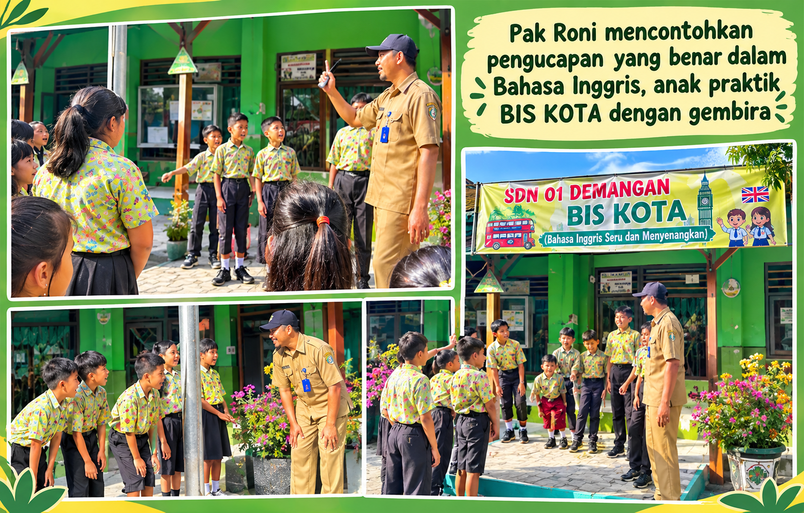

📷 Tambahkan foto BIS KOTA diassets/programs/bis-kota.jpg
Ringkasan Program
Pembiasaan Bahasa Inggris yang mengubah fokus dari sekadar mempelajari bahasa menjadi menggunakan bahasa untuk berkomunikasi. Kegiatan dilakukan secara sederhana, berulang, kontekstual, kolaboratif, dan menyenangkan. Murid dilatih bertahap dari huruf, suku kata, kata, frasa, dan kalimat sederhana hingga ungkapan komunikatif yang dekat dengan kehidupan mereka.
Pelaksanaan
Setiap Selasa, murid berlatih berbicara secara bertahap. Pembelajaran memanfaatkan active learning, repetisi, kerja kelompok, permainan, Total Physical Response (TPR), serta unsur coding dasar untuk membuat latihan bahasa lebih aktif dan bermakna. Kosakata dan kalimat digunakan kembali dalam konteks berbeda agar murid semakin terbiasa memanggil kembali dan menggunakan bahasa tersebut.
Hasil & Dampak
Berdasarkan portofolio, BIS KOTA menghasilkan peningkatan kemampuan komunikasi dasar dalam Bahasa Inggris, keberanian menggunakan ungkapan sederhana, dan penguasaan kosakata. Dampaknya diarahkan pada tumbuhnya kepercayaan diri serta minat menggunakan Bahasa Inggris sebagai alat komunikasi praktis.